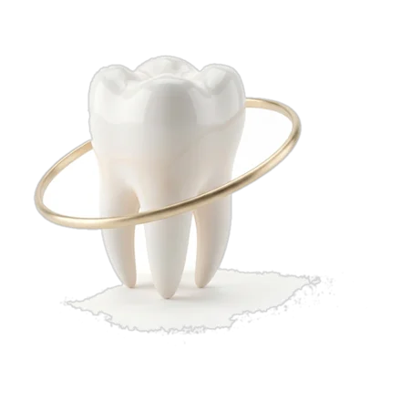
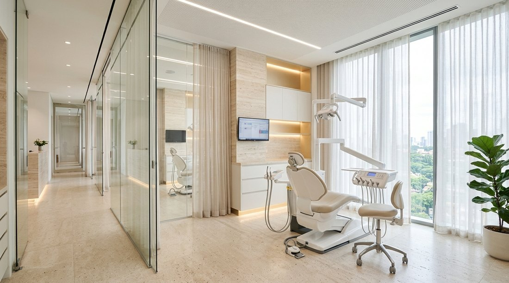
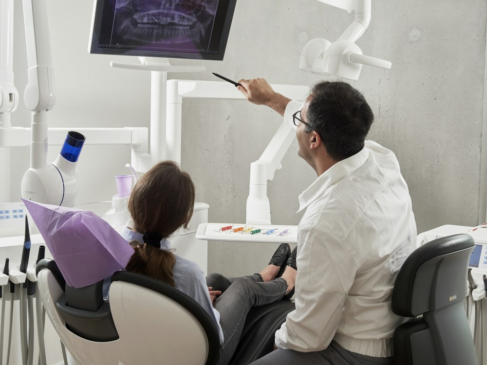
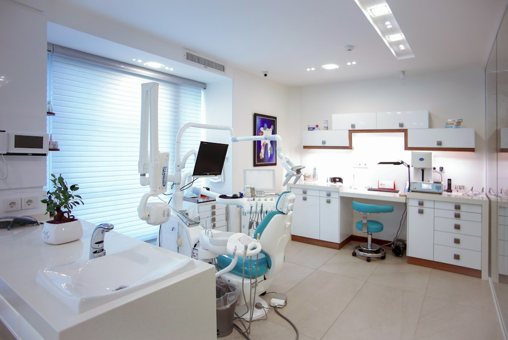
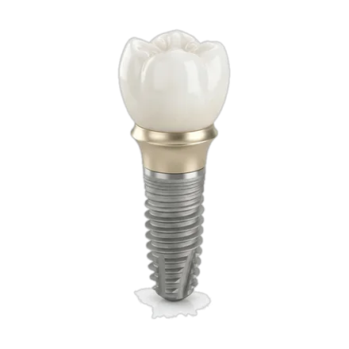
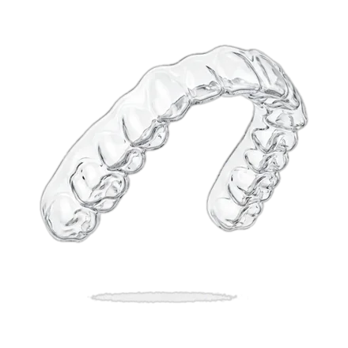

★★★★★
“Clínica linda, super limpa e moderna no centro de Altamira. Fiz meu tratamento estético com total segurança, explicaram tudo na tela antes de começar e o resultado ficou super natural.”
No IASO — Instituto Altamirense de Saúde e Odontologia, você realiza sua consulta, exames de imagem, lentes, implantes e próteses em um único lugar, com atendimento humano e sem dor.

Alta Precisão
Estética, Implantes & Raio-X
Tudo integrado na clínica
Atendimento Sem Pressa
Orçamento claro na 1ª consulta
Raio-X Digital no Local
Exames feitos na própria consulta
Biossegurança Hospitalar
Esterilização rigorosa em autoclave
Laboratório de Prótese
Coroas e próteses com entrega ágil
Acessibilidade Total
Entrada e estrutura 100% adaptadas

Estrutura Completa no Centro
Av. Djalma Dutra, 1767 · Altamira - PA
O IASO — Instituto Altamirense de Saúde e Odontologia reúne consultórios modernos, radiologia digital própria, laboratório de prótese, harmonização facial e atendimento ambulatorial no mesmo endereço.
Câmera intraoral HD e raio-x digital para você ver cada detalhe na tela.
Técnica gentil e sem pressa para pacientes que têm receio de dentista.
Cronograma de sessões e valores explicados com transparência antes de iniciar.
Reconhecida na premiação Melhores do Ano (Vale do Xingu) e nota 4,9 ★ no Google.

Raio-X Digital
Tecnologia & PróteseTecnologia de ponta em estética dental, implantes, alinhadores, harmonização e exames de imagem.
Porcelana e resina de alta naturalidade com teste do sorriso.

Mastigação firme com planejamento digital e laboratório próprio.

Placas transparentes removíveis, confortáveis e discretas.
Planejamento Digital do Sorriso (DSD) com teste em boca (Mock-up) antes de iniciar. Corrigimos formato, cor e pequenos espaços preservando a estrutura saudável do dente.
Planejamos o formato, o fechamento de espaços e a tonalidade ideal respeitando seus traços naturais, sem aspecto artificial.
Você aprova o formato no espelho antes do procedimento definitivo.
Materiais cerâmicos que imitam com perfeição a translucidez do dente natural.
Selecione a data e o horário de sua preferência e envie em 1 clique para a nossa recepção em Altamira, que confirma pelo WhatsApp.
Responda a 3 perguntas rápidas para descobrir o protocolo mais indicado para o seu caso.
37 avaliações no Google Maps
Destaque na categoria Clínica Odontológica · Melhores do Ano (Vale do Xingu)
“Clínica linda, super limpa e moderna no centro de Altamira. Fiz meu tratamento estético com total segurança, explicaram tudo na tela antes de começar e o resultado ficou super natural.”
“A praticidade de fazer o raio-x e planejar o implante e a prótese no mesmo lugar economiza muito tempo. Atendimento pontual, equipe muito preparada e excelente pós-operatório.”
“Eu tinha muito receio de dentista, mas a equipe do IASO tem uma mão extremamente leve. Ambiente acolhedor, anestesia sem dor e cuidado impecável do início ao fim.”
Depoimentos ilustrativos de layout. Na versão oficial, esta área exibe as avaliações reais dos pacientes no Google.
Endereço
Av. Djalma Dutra, nº 1767 — Centro, Altamira - PA, CEP 68371-163
Horário Oficial de Funcionamento